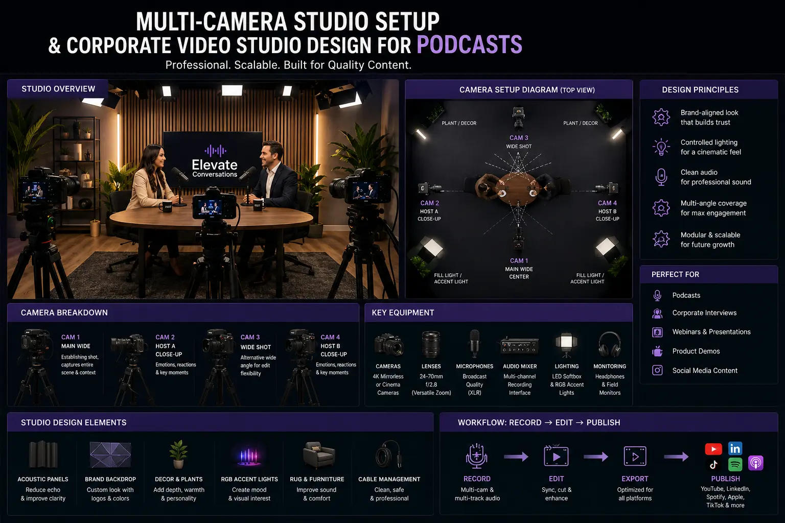
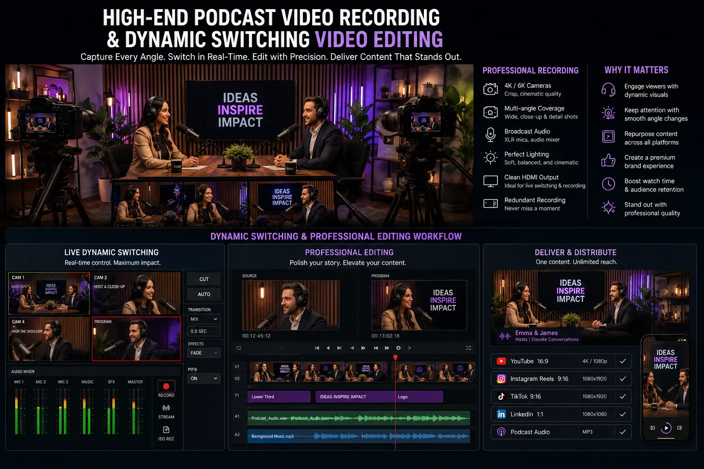

Setting Up a Multi-Camera Video Podcast Environment Built for Social Virality
Why Video Podcasts Are the Highest-ROI Content Format in 2026
The video podcast has emerged as the single most efficient content engine available to brands, executives, and thought leaders. A single 60-minute recorded conversation — when produced with a proper multi-camera setup, professional audio, and a branded visual environment — generates not just one episode but an entire ecosystem of derivative content: 15-30 short-form social clips, audiogram snippets, pull-quote graphics, full-length YouTube episodes, audio-only podcast feeds, and blog transcripts. No other content format produces this volume of cross-platform material from a single recording session.
But the critical distinction between a video podcast that generates passive listens and one that generates viral social reach is the production infrastructure. Specifically, it is the Multi-Camera Studio Setup — the multi-angle visual capture system that provides editors with the raw material to construct the fast-paced, reaction-driven, visually dynamic clips that algorithms and audiences reward on Instagram Reels, YouTube Shorts, LinkedIn, and X.
A single-camera podcast captures content. A multi-camera podcast captures moments — the exact second a guest's face changes when confronted with a challenging question, the precise gesture that accompanies a breakthrough insight, the reaction shot that makes a clip irresistible to share. This is the foundation of Video Podcast Production Services designed for the social era: building production environments where every moment is captured from the angle that makes it most compelling.
The Camera Architecture: Positions, Angles, and Lens Selection
The technical foundation of a Multi-Camera Studio Setup for podcast production is the camera positioning architecture — the specific placement, angle, and lens selection of each camera in the studio. Every camera must serve a distinct editorial function in the final edit:
- Camera 1 — The Wide Establishing Shot. Positioned centrally, directly facing the set from a distance that captures both speakers, the desk or table, and the full background set. This camera uses a wider lens (24-35mm equivalent) and runs continuously, providing the editor with a safe fallback angle for any moment and establishing the spatial context of the conversation. This is the backbone of any High-end podcast video recording setup.
- Camera 2 — Host Close-Up. Positioned at a 20-30-degree angle from the host's eyeline, capturing a medium close-up from mid-chest to just above the head. This camera uses a portrait-range lens (85-135mm equivalent) with a wide aperture (f/1.8-2.8) to produce a shallow depth of field that separates the host from the background. This is the primary angle for host-driven moments: questions, transitions, and narrative framing.
- Camera 3 — Guest Close-Up. Mirrors Camera 2's configuration on the guest's side. This is the most critical camera for capturing viral podcast clips, as guest reactions, emotional responses, and key statements are the primary raw material for high-performing social clips. Position this camera to capture the guest's most expressive angle — typically their three-quarter profile rather than a direct frontal shot.
- Camera 4 (Optional) — Detail or Overhead. Positioned above the desk or aimed at a product demonstration area, this camera captures hands, products, documents, or visual aids that are referenced during the conversation. For corporate and brand podcasts, this angle adds visual variety and supports product-focused content segments.
Dynamic Visual Editing
Dynamic switching video editing uses multi-camera angles to create fast-paced, broadcast-quality cuts that maintain viewer attention — essential for both full episodes and short-form social clips.
Branded Set Environment
Investing in visual set design for businesses creates a permanent, recognisable branded environment that reinforces visual identity in every frame of every episode and every derivative clip.
Viral Clip Capture
A multi-camera setup is the technical prerequisite for capturing viral podcast clips — ensuring every reaction, gesture, and emotional moment is recorded from the most compelling angle.
Studio-Grade Production
Delivering professional studio-grade audio-visuals requires purpose-built lighting, acoustically treated environments, and broadcast-quality camera and microphone chains.

Audio Architecture: The Non-Negotiable Foundation
Viewers will forgive imperfect video. They will not forgive poor audio. The audio architecture of a video podcast studio is the single most important technical investment — and the most common point of failure in studios that prioritise visual aesthetics over acoustic fundamentals. Professional studio-grade audio-visuals require:
- Dedicated microphones per speaker. Each participant requires a dedicated dynamic cardioid microphone — positioned 15-20cm from the mouth at a 30-degree angle — that rejects room noise and isolates the individual voice. Dynamic microphones (Shure SM7B, Electro-Voice RE20, or Røde PodMic) are preferred over condenser microphones for podcast environments because they are less sensitive to room reflections and background noise.
- Multi-channel independent recording. Each microphone must feed into a multi-channel audio interface or mixer that records each channel as a separate, independent audio file. This allows the editor to adjust levels, apply noise reduction, and EQ each voice independently in post-production — a capability that is impossible with a single mixed recording.
- Acoustic room treatment. The recording space must be treated with absorption panels on walls and ceiling to eliminate echo, flutter, and standing waves. Bass traps in corners control low-frequency build-up. The goal is a "dead" room — a space with minimal natural reverberation — that sounds clean and intimate regardless of the room's physical size.
- Backup recording redundancy. Run a secondary recording system — a standalone recorder or a software-based backup capture — that records all channels simultaneously. In professional Video Podcast Production Services, a single-point-of-failure recording chain is an unacceptable risk.
Set Design: Building a Branded Visual Environment
The visual environment of a video podcast studio is not decoration — it is brand communication. Every frame of every episode and every derivative social clip displays the set behind the speakers, making the set design a persistent, high-frequency brand touchpoint. Effective visual set design for businesses follows specific principles:
Brand Integration
- Incorporate brand colours through accent lighting (LED strips, neon signs, or coloured backlighting) that is visible in every camera angle.
- Display the company logo subtly but visually — on a backlit panel, a desk plaque, or an embossed wall element — positioned to appear naturally in the wide shot.
- Select furniture, fixtures, and materials that match the brand's positioning: minimalist metal and glass for technology brands, warm wood and leather for heritage brands, bold colours and creative objects for creative agencies.
- Ensure every visual element serves the brand story — eliminate generic or distracting decorations that do not communicate brand identity.
Lighting Design
- Use a three-point lighting system (key, fill, rim) for each speaker, with colour-temperature-matched LED panels at 5500K for consistent, natural skin tones.
- Add practical background lights — desk lamps, shelf lighting, accent spots — that create depth and visual interest in the wide shot without competing with speaker illumination.
- Install dimmable, colour-adjustable accent lighting that can be tuned to match brand colours or seasonal themes without reconfiguring the entire lighting rig.
- Ensure all lighting is flicker-free at the recording frame rate to prevent banding and strobing artefacts in video footage.
Corporate Studio Standards
- Build the studio as a permanent, purpose-built space — not a temporarily repurposed meeting room — to ensure Corporate Video Studio Design consistency across every recording session.
- Install soundproofing (mass-loaded vinyl, decoupled walls, sealed doors) to isolate the studio from external noise sources.
- Route all cables (power, video, audio, network) through floor trunking or wall channels to eliminate visible cable runs in any camera angle.
- Document the complete technical configuration — camera positions, lens settings, lighting levels, microphone gains — as a setup reference sheet for consistent reproduction.
Post-Production: Dynamic Switching and Social Clip Extraction
The post-production workflow is where the multi-camera investment delivers its return. Dynamic switching video editing — the practice of cutting between camera angles to follow the conversational energy, emphasise reactions, and maintain visual pace — transforms a static conversation into a visually engaging, broadcast-quality programme:
- Cut to the speaker on emphasis points. Switch to the close-up angle of the person speaking at the moments of highest emphasis — the punchline of a story, the core of an argument, the emotional peak of an anecdote. Hold the shot for 3-5 seconds before cutting away.
- Cut to the listener for reaction shots. The most powerful cuts in podcast editing are reaction shots — switching to the non-speaking participant's close-up at moments of surprise, agreement, disagreement, or laughter. These reaction shots are the primary raw material for viral social clips.
- Use the wide shot as a reset. Return to the wide establishing shot between conversational segments, at topic transitions, and during natural pauses. The wide shot gives the viewer spatial context and prevents the close-up cutting pattern from becoming monotonous.
- Extract social clips with vertical reframing. During post-production, identify the 15-30 highest-impact moments and extract them as standalone clips. Reframe each clip from horizontal 16:9 to vertical 9:16 for Instagram Reels, YouTube Shorts, and TikTok. Add burned-in captions, brand intro cards, and end-screen CTAs to each clip.

Conclusion
A video podcast environment built for social virality requires deliberate investment in three production pillars: a Multi-Camera Studio Setup that captures every moment from multiple compelling angles, professional studio-grade audio-visuals that deliver broadcast-quality sound and image, and a branded visual set design for businesses that reinforces corporate identity in every frame.
Video Podcast Production Services designed for the social era treat every recording session as a content generation event — producing not just a single episode but an entire library of derivative clips through dynamic switching video editing and systematic social extraction workflows. The studios that invest in High-end podcast video recording infrastructure and Corporate Video Studio Design are the ones generating the most shareable, most engaging, and most brand-building content in 2026.
At The PhD Ads, we design, build, and operate multi-camera podcast studios for Indian businesses — from Corporate Video Studio Design and acoustic treatment through multi-camera recording to post-production editing and social clip extraction optimised for capturing viral podcast clips.
Key Topics
Build a Podcast Studio Engineered for Viral Content
At The PhD Ads, we design and build multi-camera video podcast studios — branded set environments, broadcast-quality audio, and post-production workflows that turn every episode into dozens of high-impact social clips.
Email: team@e2o.in